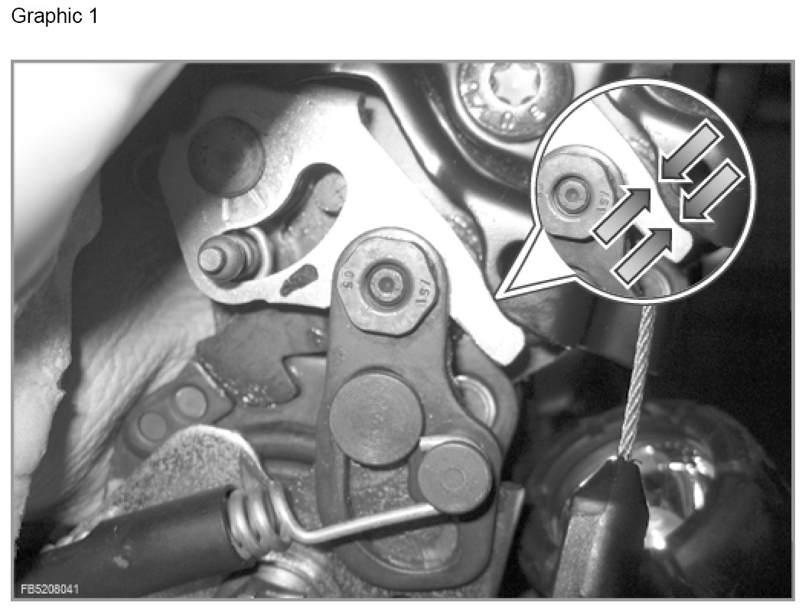
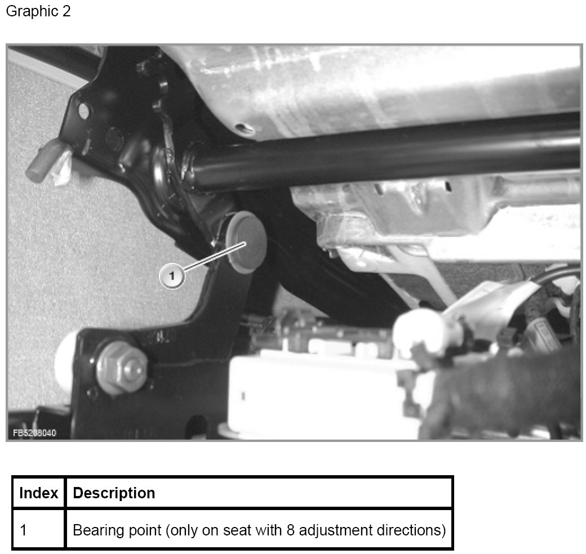

Locating Noises At the Seat
Locating Noises At the Seat
Run the checks listed below on the seat.
Procedure
If the noise can be reproduced, enter the number of the measure in the test module that is specifically designed for the purpose. Repair instructions are displayed for each measure.
Checks
Reproduce, check noise Measure no.
Only on E92, E81, E82 and E88: remove the 1
rear seat cover. Detach the cover and push
forward to the side. Apply different loads
to the seat and backrest again. Can the noise
be heard or perceived at this position
(see illustration 1)?
Only for seats with 8 adjustment directions 2
and on vehicles built up to week 31/2008:Place
height adjustment upwards, place tilt adjustment
upwards. Apply loads to the seat and backrest.
Feel around the bearing point of the tilt adjustment
(see illustration 2). Is play noticeable?
CAUTION: Do not adjust the seat: Danger of
trapping.
Only for manual seats: Squeaking / grating noise 3
with different loads on the seat or also during
height adjustment of the seat.

The arrows show the contact area of the metal plates.
